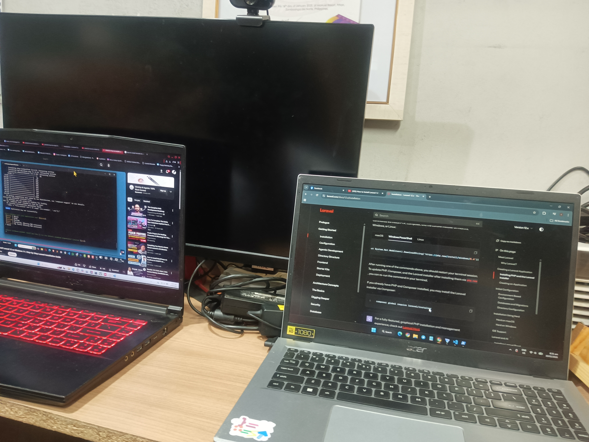
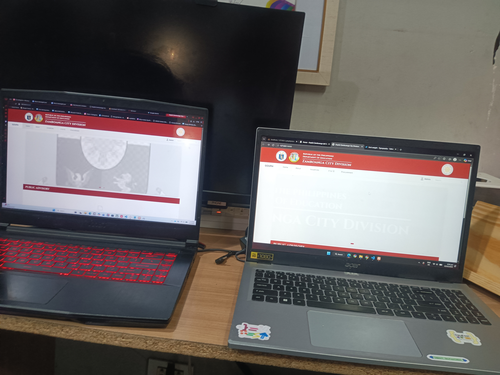
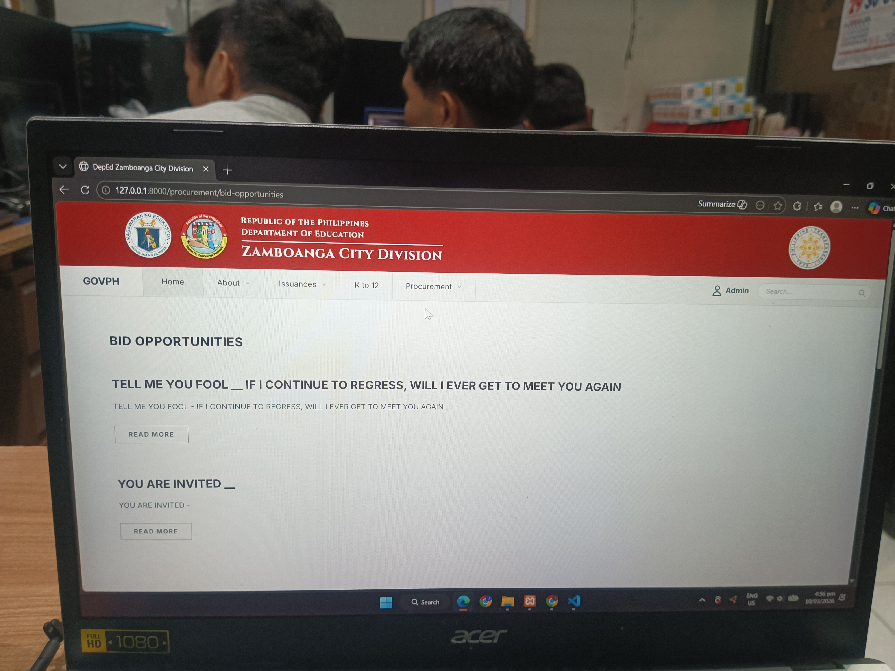
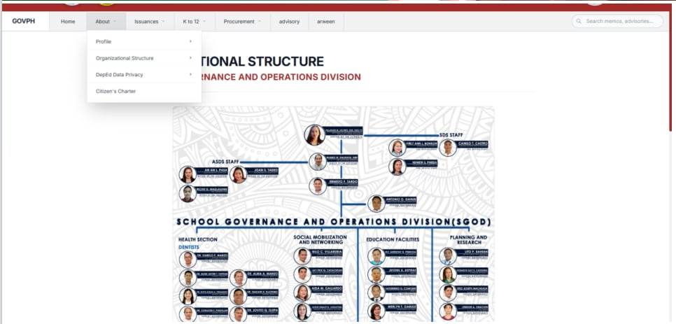
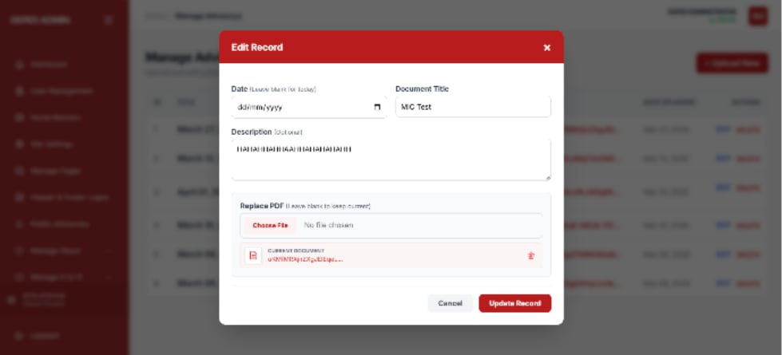
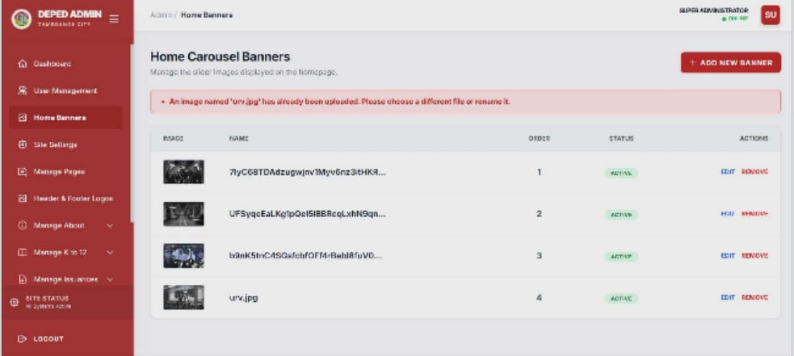
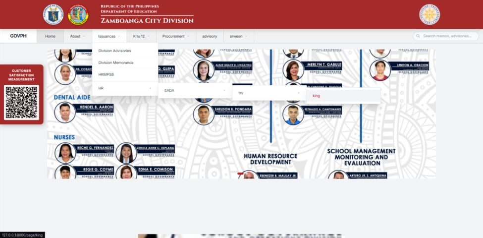
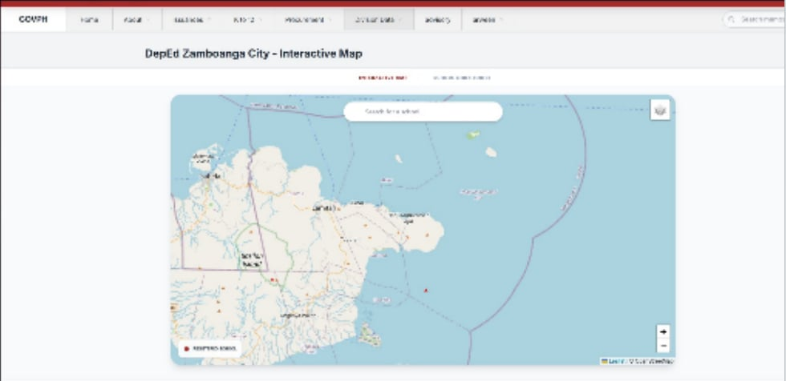

My DepEd Internship Journey
A 10-week progression architecting and deploying a highly secure, dynamic web-based administrative system for the Department of Education - Division of Zamboanga City (ICT Unit).
Team Onboarding & Database Architecture

Collaborated with the ICT team to set up our development environments and establish the foundational UI/UX. Alongside engineering the initial MySQL database schema for the Public Advisory module, I also resolved GitHub integration errors caused by PHP versioning conflicts and built the global header/footer navigation using Laravel[cite: 1].
Project Deployment & User Management

Officially deployed the initial system framework with the division staff. Beyond transitioning to a functional web app with full CRUD capabilities for memorandums, I migrated the static dashboard carousel to a dynamic component and initiated the backend logic for secure, role-based user access to address identified security vulnerabilities[cite: 2].
Procurement Module & Curriculum Logic

Developed the dynamic Procurement page to display bid opportunities programmatically. I also engineered complete CRUD functionality for Learning Materials, created a dynamic FAQ interface, and built custom Laravel Blade components to handle complex nested data structures for the K-12 Curriculum Guide[cite: 3].
Organizational Structure & Admin Controls

Completed the "About" module, successfully mapping and rendering the department's complex Organizational Structure. While integrating CKEditor to empower administrators with direct page formatting, I also applied strict input sanitization on the Laravel backend to securely handle complex HTML and prevent cross-site scripting (XSS) vulnerabilities[cite: 4].
Maintenance Modes & Layout Constraints
Engineered a page deactivation feature that safely triggers a custom maintenance screen by managing active/inactive database state flags. We also resolved complex responsive UI bugs, applying CSS wrappers to maintain layout constraints when handling unpredictable external media embeds like Facebook videos[cite: 5].
Modal Standardization & Breadcrumbs

Standardized the UI/UX design of all administrative modal pop-ups, such as the "Edit Record" interface. I implemented global breadcrumbs for better navigability, carefully refactoring existing code to unify table layouts and adjust global padding constraints without disrupting underlying backend functionalities[cite: 6].
Data Validation & Advanced Security

Strengthened data integrity by programming strict duplication logic across file upload modules like the Home Carousel Banners. I also led the integration of a custom Role-Based Access Control (RBAC) mechanism, coding custom middleware to enforce strict viewing and editing permissions across the admin panel[cite: 7].
Nested Hierarchies & Data Filtering

Rewrote the dynamic pages module using recursive database structures to support deeply nested dropdown navigation menus. I also engineered multi-layered filtering for student directories and unified the public and private upload workflows, applying the DRY (Don't Repeat Yourself) principle to optimize backend Laravel queries[cite: 8].
Interactive Map API Integration

Collaborated across development teams to securely fetch and integrate an external API using Postman, successfully rendering a dynamic interactive map of the region. Furthermore, I finalized the Procurement data module by implementing both advanced date filtering and free-text search capabilities[cite: 9].
Final Presentation & System Refinement

Presented the comprehensive, finalized system to the ICT supervisor and team for evaluation. I addressed user acceptance feedback by stabilizing the home banner, redesigning the admin login interface, and standardizing duplication check validation requests across almost all upload forms to prevent long-term server bloat[cite: 10].